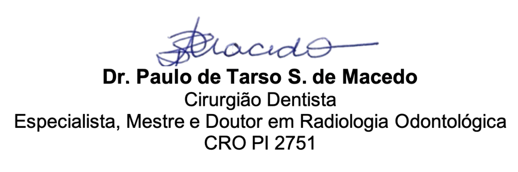

LAUDO INTERATIVO
🔍 Visão Geral
🔍 Laudo Interativo
Visão Geral
Achados Radiográficos
Toque nas categorias para destacar achados — ou toque diretamente nas anotações.
×
—
💡 Conduta provável
🔬 Exame sugerido
Achados Radiográficos
Toque nos botões acima para explorar por categoria — ou toque diretamente nas anotações da imagem.
← Todos os achados
Carregando...
◀ Anterior
1 / 1
Próximo ▶
🔍 Visão Geral
⟲ Reset
